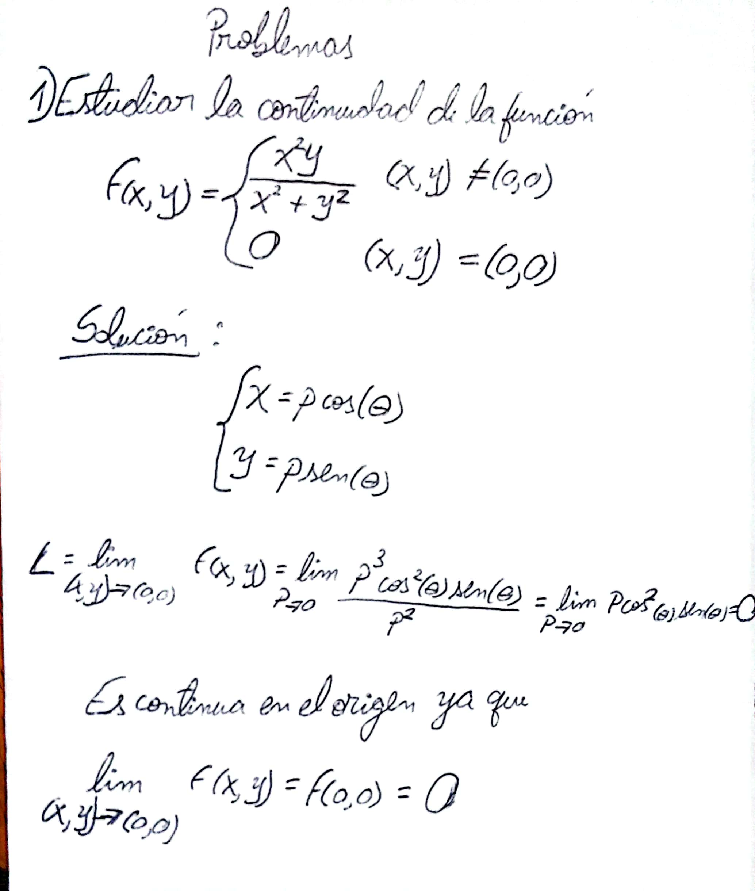
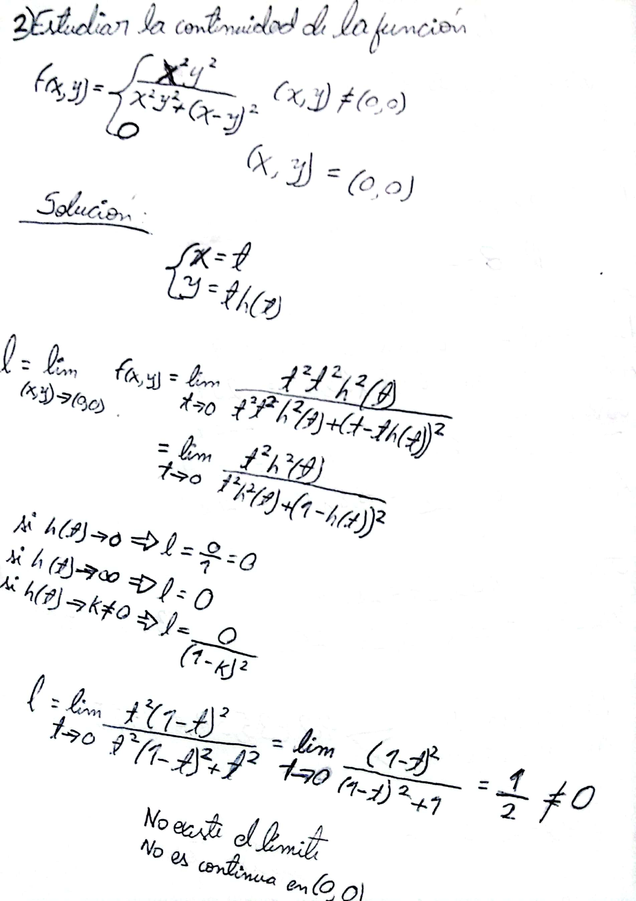

FUNCIONES DE VARIAS VARIABLES
Para más información, haga click aquí para ir a ¿Qué son las funciones multivariable? en Khan Academy.
Introducción.
En esta página web, se explorarán las funciones de varias variables y su importancia en el campo de las matemáticas y la ciencia. Se analizará cómo estas funciones pueden modelar fenómenos del mundo real y cómo se pueden utilizar para resolver problemas complejos en diferentes disciplinas. Además, se examinarán las propiedades y características de las funciones de varias variables, así como las técnicas para su representación gráfica y su optimización. Esto proporcionará una visión general de las funciones de varias variables y su relevancia en la resolución de problemas en el ámbito académico y profesional.
Sobre las Funciones de varias Variables.
¿Cuál es su importancia?
Las funciones de varias variables son fundamentales en el campo de las matemáticas y la ciencia, ya que nos permiten modelar fenómenos del mundo real que involucran múltiples factores. Estas funciones son utilizadas en disciplinas como la física, la ingeniería, la economía, la biología y muchas otras, para resolver problemas complejos que no pueden ser abordados con funciones de una sola variable.
Por ejemplo, en física, estas funciones se utilizan para modelar el movimiento de partículas en un campo gravitatorio, el comportamiento de fluidos en un sistema, o la propagación de ondas en un medio. En ingeniería, se utilizan para diseñar estructuras que deben soportar diferentes cargas y fuerzas, o para optimizar procesos de producción y distribución. En economía, se utilizan para analizar el comportamiento de mercados y tomar decisiones sobre la asignación de recursos. En biología, se utilizan para modelar la interacción entre diferentes especies en un ecosistema, o para entender procesos bioquímicos complejos. En todos estos casos, las funciones de varias variables nos permiten tener en cuenta múltiples factores que interactúan entre sí, y nos proporcionan herramientas matemáticas para analizar y resolver problemas complejos. Esto incluye técnicas como la optimización, el cálculo de gradientes y puntos críticos, la integración sobre regiones tridimensionales, entre otras. En resumen, las funciones de varias variables son fundamentales para abordar situaciones del mundo real que involucran múltiples factores interrelacionados, y nos proporcionan las herramientas matemáticas necesarias para comprender y resolver estos problemas.

Las propiedades y características de las funciones de varias variables son objeto de estudio en matemáticas avanzadas, y su comprensión es esencial para poder utilizarlas de manera efectiva en la resolución de problemas. Por ejemplo, es importante entender conceptos como el gradiente, la matriz hessiana y los puntos críticos para poder optimizar una función de varias variables y encontrar máximos o mínimos.
La representación gráfica de las funciones de varias variables también es crucial para comprender su comportamiento. A diferencia de las funciones de una sola variable, que pueden ser representadas en un plano cartesiano, las funciones de varias variables requieren representaciones tridimensionales o incluso en dimensiones superiores. Estas representaciones nos permiten visualizar cómo cambia la función en función de sus variables y son útiles para identificar patrones y tendencias.
 
Conclusión
En resumen, las funciones de varias variables son una herramienta poderosa para modelar fenómenos del mundo real y resolver problemas complejos en diversas disciplinas. Su estudio es fundamental tanto en el ámbito académico como en el profesional, ya que nos proporciona las herramientas necesarias para comprender y analizar situaciones que involucran múltiples factores interrelacionados.